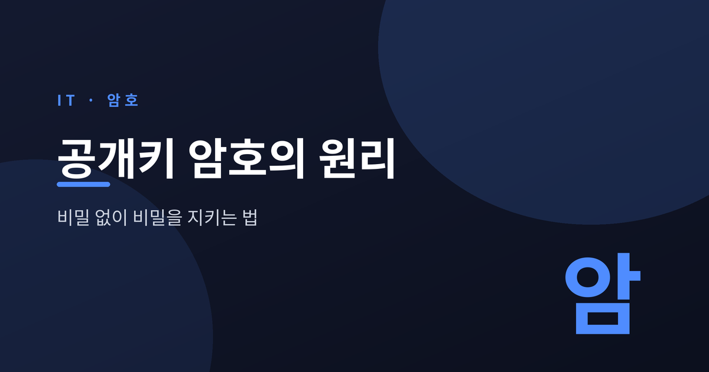
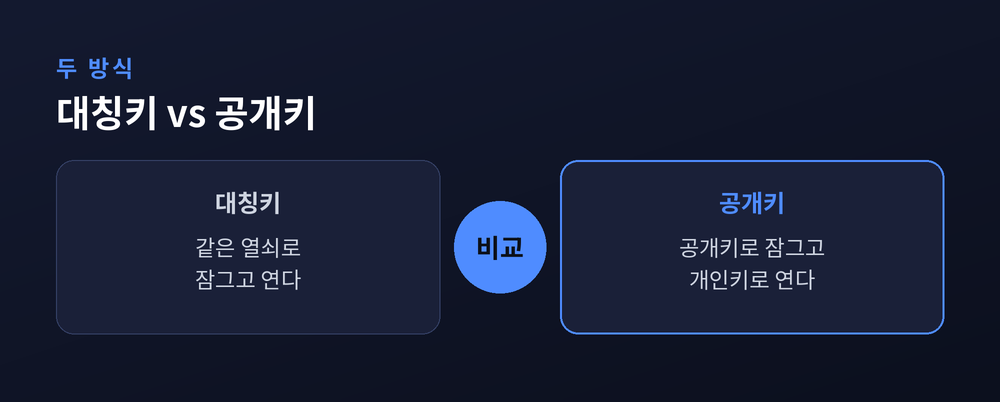
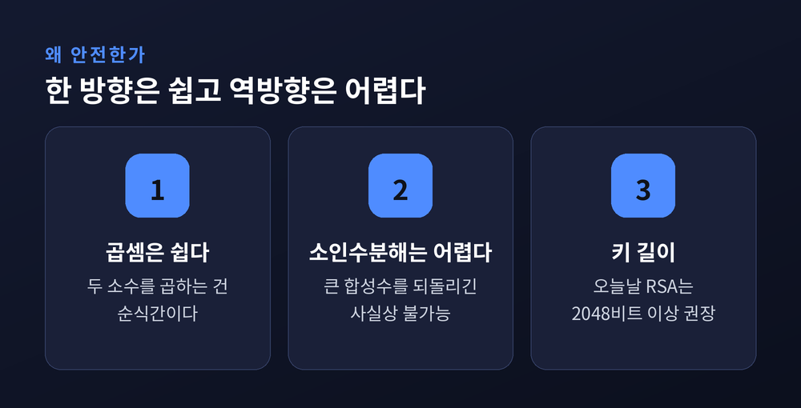
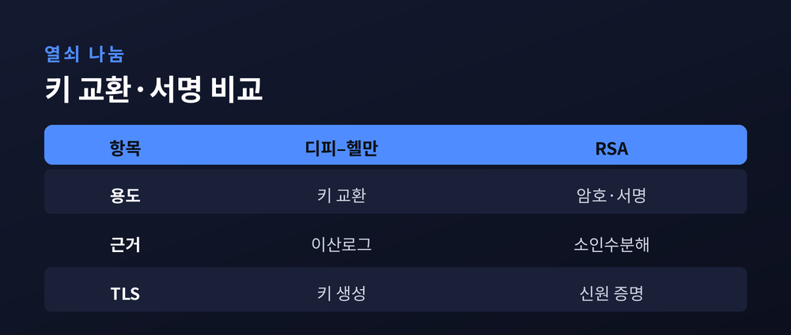
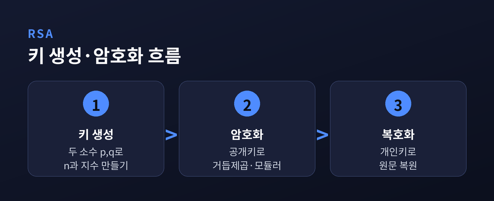

이번 글에서는 공개키 암호가 어떻게 작동하는지 정리해 보겠습니다. 도청자가 오가는 값을 모두 지켜보는 열린 채널에서도, 두 사람은 어떻게 둘만의 비밀을 만들 수 있을까요. 대칭키의 한계에서 출발해 디피–헬만 키 교환과 RSA, 전자서명, 그리고 우리가 매일 쓰는 HTTPS까지 차근히 따라가 보려 합니다.

전통적인 암호는 열쇠 하나로 잠그고 그 열쇠로 다시 엽니다.
이를 대칭키 방식이라 부릅니다. 빠르고 단순합니다.
문제는 다른 곳에 있습니다. 잠근 것을 상대가 열려면, 그 열쇠를 먼저 건네줘야 합니다.
그런데 열쇠를 안전하게 건넬 통로가 있었다면, 애초에 암호가 왜 필요했을까요.
이 모순을 '키 배송 문제'라고 합니다. 암호학이 오랫동안 풀지 못한 매듭이었습니다.
참여자가 늘면 사정은 더 나빠집니다. 서로 주고받을 사람이 많아질수록, 관리해야 할 비밀 열쇠의 수가 걷잡을 수 없이 불어납니다.

1976년 휘트필드 디피와 마틴 헬만이 「New Directions in Cryptography」라는 논문을 발표합니다.
암호의 방향을 통째로 바꾼 글이었습니다.
이들이 던진 발상은 이렇습니다. 열쇠를 두 개로 나누자. 하나는 자물쇠처럼 만인에게 공개하고, 하나는 나만 갖는다.
공개된 열쇠로 잠근 것은 오직 나의 비밀 열쇠로만 열립니다. 그러니 열쇠를 몰래 배송할 필요가 없습니다.
이것이 공개키 암호입니다. 흥미롭게도 같은 아이디어를 영국 정보기관 GCHQ의 말콤 윌리엄슨이 몇 년 앞서 떠올렸지만, 기밀로 묶여 세상에 나오지 못했습니다.
공개키 암호의 뿌리는 '일방향 함수'라는 수학적 성질입니다.
한쪽으로 계산하기는 쉽지만, 그 반대로 되돌리기는 사실상 불가능에 가깝습니다.
가장 익숙한 예가 곱셈과 소인수분해입니다. 두 소수를 곱하는 건 순식간입니다. 하지만 커다란 합성수를 다시 소수의 곱으로 쪼개는 일은 지독하게 어렵습니다.
곱셈은 수가 커져도 금세 끝나지만, 소인수분해는 수가 커질수록 계산 시간이 지수적으로 폭발합니다.
또 하나는 거듭제곱과 이산로그입니다. 어떤 수를 여러 번 곱한 뒤 나머지를 취하기는 쉽습니다. 그러나 그 결과만 보고 몇 번 곱했는지 되짚기란 사실상 불가능합니다.
색을 떠올리면 감이 옵니다. 노랑에 빨강을 섞기는 쉽습니다. 그러나 섞인 주황에서 원래의 노랑과 빨강을 다시 분리해내는 건 불가능에 가깝습니다.

디피–헬만 키 교환은 이 일방향 함수를 절묘하게 씁니다.
앨리스와 밥이 도청당하는 채널에서도 둘만의 비밀을 만들어내는 방법입니다.
순서는 이렇습니다.
먼저 두 사람은 공개된 값에 합의합니다. 소수 하나와 생성원 하나입니다. 누가 봐도 상관없습니다.
다음으로 앨리스는 자기만의 비밀 숫자를, 밥도 자기만의 비밀 숫자를 몰래 정합니다.
각자 공개 값에 자기 비밀을 섞어 중간값을 만들고, 그 중간값을 서로에게 보냅니다. 이 중간값은 도청돼도 괜찮습니다.
마지막으로 상대가 보낸 중간값에 자기 비밀을 한 번 더 섞습니다. 그러면 두 사람은 정확히 같은 값에 도달합니다. 이것이 공동의 비밀 열쇠입니다.
앞서 본 색 섞기와 똑같습니다. 공개색 노랑에 앨리스는 빨강을, 밥은 파랑을 섞어 교환합니다. 받은 혼합색에 자기 비밀색을 다시 섞으면 둘 다 '노랑+빨강+파랑'이라는 같은 색이 됩니다.
도청자 이브는 공개 값과 오간 중간값을 모두 봅니다. 그럼에도 최종 비밀은 만들지 못합니다. 비밀 숫자를 알아내려면 이산로그 문제를 풀어야 하는데, 그 문을 여는 효율적인 방법이 아직 세상에 없기 때문입니다.
다만 이 방식에도 빈틈은 있습니다. 상대가 진짜 앨리스인지, 진짜 밥인지 확인하는 절차가 없다면, 중간에 낀 이브가 양쪽을 속여 각각과 따로 열쇠를 맺을 수 있습니다. 이른바 중간자 공격입니다. 그래서 순수한 디피–헬만은 신원을 증명하는 장치와 반드시 함께 씁니다.

RSA는 1977년 리베스트, 샤미르, 에이들먼 세 사람의 이름에서 나온 이름입니다.
이 방식은 큰 수의 소인수분해가 어렵다는 사실 하나에 안전을 겁니다.
과정을 세 걸음으로 나눠 보겠습니다.
첫째, 키 생성입니다. 커다란 소수 두 개를 무작위로 고르고 곱합니다. 그 곱이 자물쇠 노릇을 하는 공개 값이 됩니다. 여기서 공개 열쇠와 개인 열쇠가 함께 만들어집니다.
둘째, 암호화입니다. 보내는 사람은 공개 열쇠로 평문을 거듭제곱하고 나머지를 취합니다. 이 모듈러 거듭제곱은 컴퓨터가 빠르게 해냅니다.
셋째, 복호화입니다. 받는 사람은 자기 개인 열쇠로 같은 종류의 계산을 거쳐 원문을 되살립니다.
안전의 핵심은 다시 일방향 함수입니다. 공격자가 공개된 곱을 소수 둘로 쪼갤 수만 있다면 개인 열쇠도 알아냅니다. 그러나 그 곱이 충분히 크면, 오늘날의 계산 능력으로는 사실상 불가능합니다.

막연한 '충분히 큰'을 숫자로 바꿔 보겠습니다.
미국 표준기술연구소 NIST의 권고는 이렇습니다. RSA-2048은 2030년까지 쓸 만하며 112비트 수준의 보안을 제공합니다. 그 이후를 대비하려면 128비트 보안에 해당하는 RSA-3072, 혹은 타원곡선암호로 옮기기를 권합니다.
키 길이의 무게감은 실제 기록이 말해 줍니다. 2020년 2월, 국제 연구팀이 829비트짜리 수(RSA-250)를 공개적으로 소인수분해하는 데 성공했습니다. 역대 최대 규모였습니다.
여기에 든 계산량이 약 2,700 코어-년입니다. 수만 대의 컴퓨터를 몇 달간 돌린 셈입니다.
그런데 이렇게 온 힘을 쏟아 깨뜨린 829비트조차, 실무의 최소 권장선인 2048비트보다 한참 작습니다. 왜 2048비트, 3072비트라는 큰 수를 쓰는지 여기서 분명해집니다.
한 가지 덧붙이면, 같은 128비트 보안을 타원곡선암호는 256비트 키로 얻습니다. RSA는 같은 안전을 위해 훨씬 긴 열쇠가 필요한 셈입니다. 그래서 최근에는 더 짧고 가벼운 타원곡선 방식으로 무게 중심이 옮겨가고 있습니다.
공개키 암호에는 또 하나의 얼굴이 있습니다. 전자서명입니다.
암호화가 공개 열쇠로 잠그고 개인 열쇠로 여는 것이라면, 서명은 그 순서를 뒤집습니다. 개인 열쇠로 서명하고, 누구나 공개 열쇠로 검증합니다.
방법은 이렇습니다. 먼저 원문을 해시 함수에 통과시켜 짧은 지문 하나를 뽑습니다. 그 지문을 자기 개인 열쇠로 처리하면 서명이 됩니다.
받는 쪽은 서명자의 공개 열쇠로 서명을 검증해 원래 지문을 되찾고, 자기가 받은 원문을 직접 해시한 값과 맞춰 봅니다. 두 값이 같으면 진짜 그 사람이 보냈고, 도중에 한 글자도 바뀌지 않았다는 뜻입니다.
이 작은 절차가 신원과 무결성을 동시에 지킵니다.
이 모든 이야기는 교과서 안에만 있지 않습니다.
주소창의 자물쇠 표시, 곧 HTTPS 접속마다 공개키 암호가 조용히 일합니다.
브라우저와 서버는 접속 초입에 TLS 핸드셰이크라는 짧은 인사를 나눕니다. 여기서 공개키 암호가 두 가지 일을 맡습니다.
하나는 키 교환입니다. 최신 규격인 TLS 1.3은 연결마다 임시 디피–헬만(ECDHE)으로 그때그때 새 비밀 열쇠를 만듭니다. 쓰고 나면 임시 열쇠는 버립니다. 그래서 서버의 장기 열쇠가 훗날 새어 나가도, 지나간 대화는 되살릴 수 없습니다. 이를 순방향 비밀성이라 부릅니다.
다른 하나는 신원 증명입니다. 서버의 장기 열쇠(가령 RSA 키)는 오직 서명에만 쓰여, "나는 진짜 그 사이트가 맞다"는 것을 증명합니다.
예전 TLS 1.2 시절엔 서버의 RSA 열쇠로 비밀을 통째로 감싸 보내는 방식이 있었습니다. 지금은 매번 새 열쇠를 만드는 디피–헬만이 그 자리를 대신합니다. 낡은 방식은 아예 걷어냈습니다.
정리하면 이렇습니다. 디피–헬만이 비밀 열쇠를 만들고, RSA 같은 서명이 상대의 신원을 보증합니다. 두 축이 맞물려 오늘의 안전한 웹이 돌아갑니다.
끝으로 한 가지만 덧붙이겠습니다.
공개키 암호의 아름다움은 역설에 있습니다. 열쇠를 감추지 않고 대놓고 공개하는데도, 비밀은 더 단단히 지켜집니다.
비밀을 숨겨서가 아니라, 되돌릴 수 없는 수학의 벽에 기대어 지키기 때문입니다.
— 비밀 없이 비밀을 지키는 법, 그 발상 하나가 오늘 우리가 안심하고 검색하고 결제하는 세상을 떠받치고 있습니다.